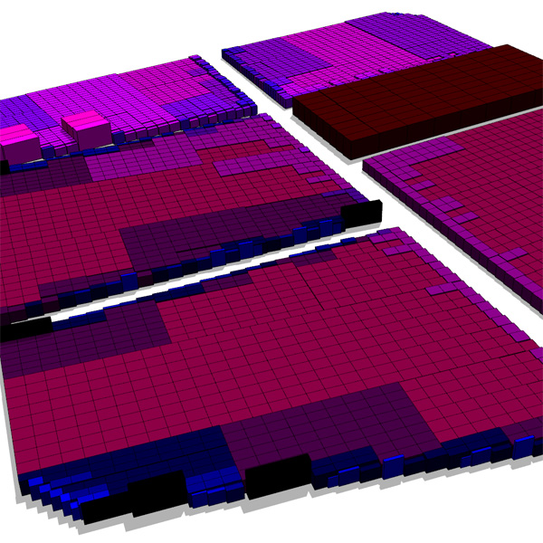
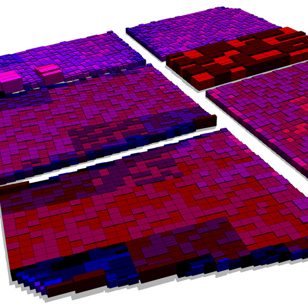
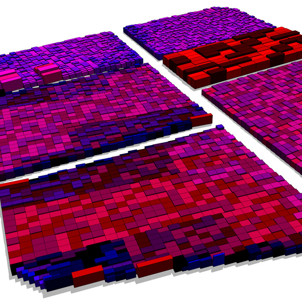

assetApproxSize
Syntax
string assetApproxSize(searchQuery, axisSize, n)
Parameters
- searchQuery (string)
Search query to apply on list of all files in the workspace. See fileSearch for details about the syntax. - axisSize (string)
"x", "y", "z", "xy", "xz", "yz", "xyz" Axes for the currect scope. - n (float)
Number (integer >= 1) of possible returned result strings. (1 returned randomly out of n possibilities)
Returns
Asset with one of the best n size fits (according to axisSize).
Description
This function returns one of the n best size fitting assets, from the file list specified in string, according to the specified axisSize string.
Note: assetApproxSize(string, axisSize, 1) = assetBestSize(string, axisSize)
Related
- assetApproxRatio function
- assetBestRatio function
- assetBestSize function
- assetFitSize function
- fileBasename function
- fileDirectory function
- fileExtension function
- fileName function
- fileRandom function
- imageApproxRatio function
- imageBestRatio function
Examples
Inserting assets based on their (physical) size
The goal is to insert assets from a pool, depending on their (physical) size. The pool of assets is seen in the following image. Colors are (only) used to visually emphasize the size ratio.

CGA examples with n = 1, n = 2 and n = 3:
Note.1: Note the geometry variations in the next 3 images by using only the n parameter.
Note.2: Note that small parts get blue assets while large parts get red assets.
n = 1:
Lot -->
s('.9,'.9,'.9) center(xz) recursiveSplit(0)
recursiveSplit(n) -->
case scope.sx >= 1.5 && scope.sz >= 1.5:
split(x){~scope.sx/3: split(z){~scope.sz/3: recursiveSplit(n+1)}*}*
else: innerRectangle(scope) { shape : doInsert }
doInsert -->
alignScopeToAxes(y)
i(assetApproxSize("/myProject/assets/cube_*.obj","xz",1))

n = 2:
..
i(assetApproxSize("/myProject/assets/cube_*.obj","xz",2))

n = 3:
..
i(assetApproxSize("/myProject/assets/cube_*.obj","xz",3))

Copyright ©2008-2020 Esri R&D Center Zurich. All rights reserved.